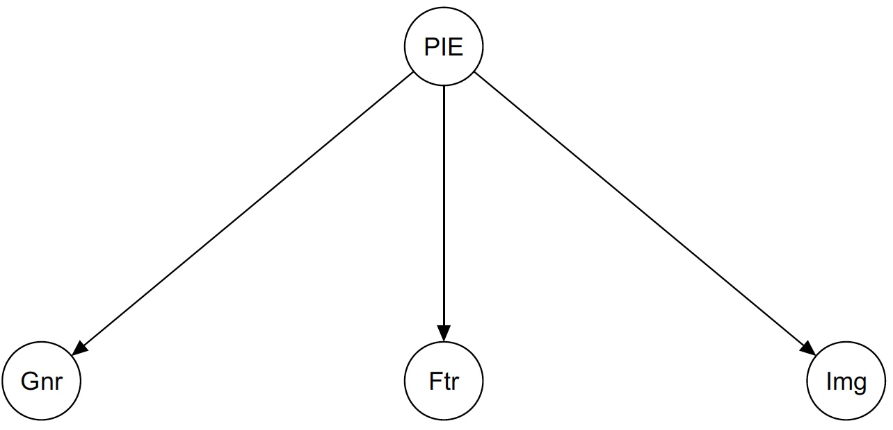
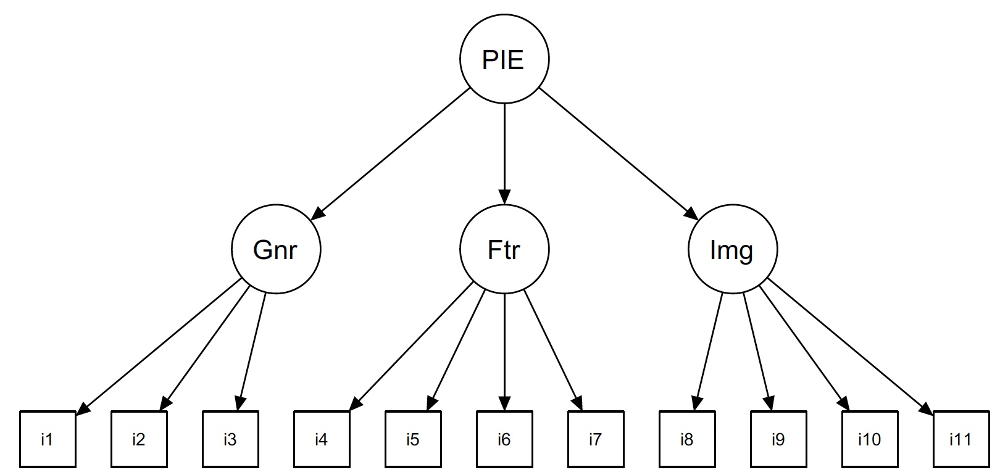
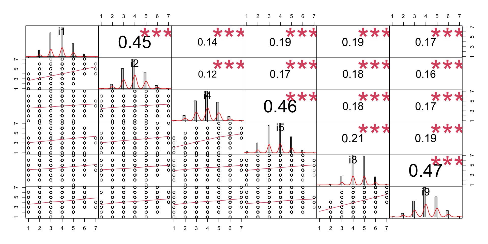
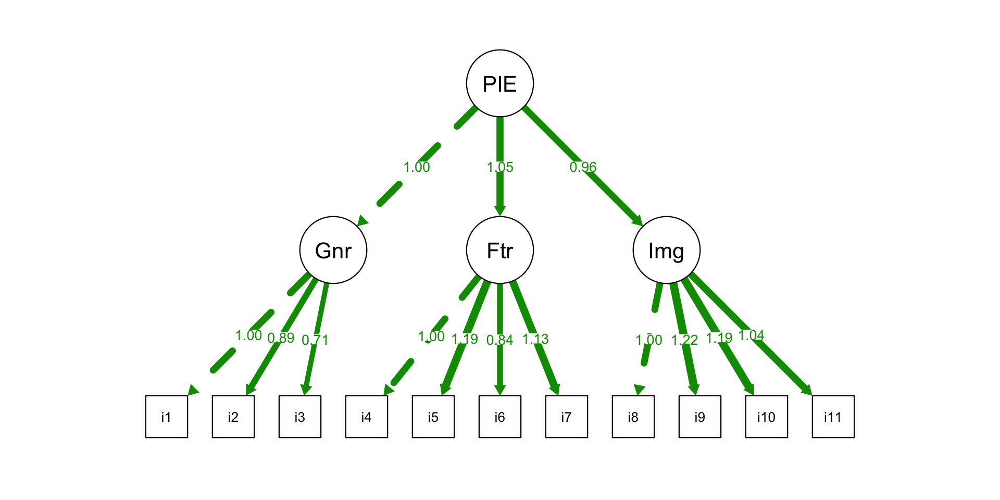
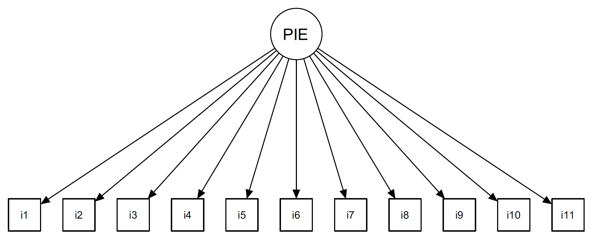
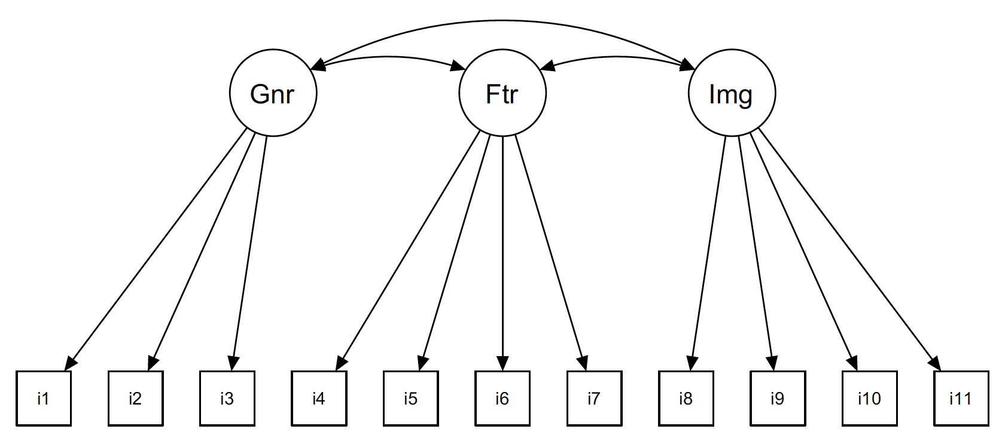

Análise Multivariada
Análise Fatorial Confirmatória
IFMG - Campus Formiga
26 de novembro de 2023
Análise Fatorial Confirmatória (CFA)
- CFA é um caso especial dos Modelos de Equações Estruturais (SEM).
Principais aplicações:
Avaliar a estrutura de escalas de pesquisas — os itens são carregados onde seria esperado?
Avaliar o ajuste/adequação de um modelo fatorial — o modelo proposto é melhor do que as alternativas?
Avaliar os pesos dos itens uns em relação aos outros e a uma escala – eles contribuem igualmente?
Modelar outros efeitos, como efeitos de métodos e relacionamentos hierárquicos.
CFA: Avaliação de Escala - PIES
Começamos considerando uma escala de pesquisa que busca avaliar o envolvimento com um produto.
CHAPMAN et al. (2014) proposuream esta escala.
Usando os itens exibidos na Fig. 1, esta escala reflete uma teoria em que o envolvimento com um produto é uma construção hierárquica que compreende 3 fatores:
- Envolvimento geral com uma categoria de produto,
- Envolvimento com as características do produto, e;
- Envolvimento com a categoria em termos de imagem pessoal.
- Neste instrumento, três subescalas refletem os 3 fatores que podem levar a pontuações mais altas ou mais baixas dependendo de como os consumidores veem um produto.
PIES: Instrumento

CFA: Avaliação de Escala - PIES
Por exemplo, profissionais de marketing, esperariam que câmeras digitais envolvessem os consumidores em termos das suas características técnicas e, assim, obtivessem uma pontuação elevada no envolvimento com as características.
Por outro lado, o vestuário é um componente-chave de imagem pessoal e pode-se esperar que obtenha uma pontuação elevada em termos de envolvimento com a imagem.
Um produto genérico como papel pode apresentar um baixo envolvimento do consumidor em todos os 3 factores, enquanto automóveis pode ter um envolvimento relativamente elevado em todos os três fatores.
Este modelo foi proposto como uma alternativa a um modelo de fator único de envolvimento com um produto, onde o envolvimento é simplesmente alto ou baixo em geral, sem diferenciação entre fatores como envolvimento com características ou imagem.
CFA: Avaliação de Escala - PIES
- O modelo de 3-fatores foi denominado PIES como uma abreviatura de “Product Involvement and Enthusiasm Scale”.
Pode ser usado em muitas situações de marketing:
Por exemplo, se avaliarmos que uma categoria de produto tem alto envolvimento em características, podemos desenvolver estratégias de comunicação e de posicionamento que enfatizem as especificações técnicas.
Também pode ser usado para informar a segmentação:
Se concluirmos que um determinado grupo demográfico considera a categoria de produto importante para sua imagem pessoal, então podemos direcioná-los com campanhas que destacam o produto em termos de imagem pessoal.
PIES: Modelo Estrutural
O modelo estrutural PIES propõe quatro construtos latentes (não observados) que fundamentam o envolvimento com o produto:
- um fator de envolvimento geral (abreviado como “Gnr”),
- um fator de escolha/característica (“Feature” ou “Ftr”),
- uma fator de imagem (“Img”), e;
- um fator PIE de ordem superior (envolvimento e engajamento do produto) que é concebido como o nível de interesse subjacente aos outros três fatores.
Este modelo de fatores hierárquicos é exibido na Fig. 2.
PIES: Modelo Estrutural

PIES: Modelo Estrutural
Os 3 fatores de envolvimento e o fator PIE de ordem superior são modelados como variáveis latentes (fatores )que não são diretamente observadas.
Mas são concebidas para influenciar os itens da pesquisa que os manifestam.
Na pesquisa, cada fator é representado por um subescala composta por vários itens, conforme mostrado na Fig. 1.
PIES: Modelo Estrutural Completo
No modelo hierárquico, o fator PIE geral não influencia diretamente nenhum item da escala.
Em vez disso, influencia os outros três fatores como uma variável latente de ordem superior.
O modelo estrutural completo, mostrando a relação hierárquica dos construtos latentes e os itens manifestos da escala que são observados para cada construto, é mostrado na Fig. 3.
PIES: Modelo Estrutural Completo

PIES: Pergunta de um Analista
Uma pergunta para os autores do PIES poderia ser: o esquema PIES é um bom modelo para algum conjunto de respostas para os itens do instrumento proposto (Fig. 1)?
Se confirmarmos que o PIES é um bom modelo, estaremos mais confiantes na utilização dos dados deste questionário para fazer inferências sobre o envolvimento com um produto.
Tentaremos mostrar como a Modelagem de Equações Estruturais (SEM) em R pode confirmar, ou não, o modelo PIES.
PIES: Análise Fatorial Confirmatória
Para isso, utilizaremos uma aplicação específica da SEM conhecida como Análise Fatorial Confirmatória (CFA).
Na CFA, especifica-se a estrutura fatorial e pergunta-se:
“Quão bem o modelo proposto é consistente com a estrutura dos dados?”
Também abordaremos uma questão intimamente relacionada:
“Esse modelo é melhor do que algum outro modelo?”
Etapas Gerais da CFA
Defina seu modelo hipotético: relações das variáveis latentes com as variáveis manifestas.
Defina um ou mais modelos alternativos que sejam razoáveis, mas que você acredita serem inferiores.
Ajuste os modelos aos dados.
Determine se o seu modelo é bom o suficiente (analise as medidas de qualidade do ajuste).
Determine se o seu modelo é melhor que as alternativas.
Interprete os resultados.
Simulando dados
Para demonstrar a CFA, simularemos dados de uma estrutura fatorial conhecida que corresponde ao modelo PIES da Fig. 1.
Usaremos esses dados para demonstrar como testar um modelo teórico com a CFA, o que normalmente seria feito com dados coletados de respondentes.
Em seguida, avaliaremos modelos alternativos e discutiremos a importância da comparação de modelos para a CFA.
Simulando dados
Utilizaremos o pacote lavaan para CFA (e SEM), incluindo a simulação de dados e ajuste de modelos
Ampliaremos os recursos do pacote lavaan para comparação e visualização de modelos usando dois outros pacotes, semTools e semPlot.
Simulando dados
O primeiro passo é instalar os pacotes e disponibilizá-los em R:
Com o pacote lavaan, um modelo estrutural pode ser especificado usando uma sintaxe similar às fórmulas de um modelo linear de R.
Vamos especificar dois modelos:
um modelo estrutural que ajustaremos aos dados e cuja estrutura desejamos avaliar, e;
um modelo de dados que usaremos apenas para gerar dados simulados para fins de teste.
Modelo Estrutural
O modelo estrutural é especificado de acordo com o modelo mostrado na Fig. 3, escrito como uma string simples:
Em código SEM, lemos o símbolo
=∼comoé manifestado por, o que significa que é estimado como uma única variável que é composta pelos itens.Cada linha nesta fórmula define uma nova variável latente:
General,Featuree assim por diante – que não aparece no conjunto de dados mas que o lavaan estimará com base nos itens observados i1, i2, etc.Podemos então utilizar estas variáveis latentes noutras partes da fórmula para expressar relações adicionais.
Por exemplo, neste código a variável latente
PIESrelaciona-se, por sua vez, com as outras variáveis latentesGeneral,FeatureeImage.Tais relações entre variáveis latentes são um diferenciador chave entre SEM e a modelagem linear regular.
As fórmulas
piesModeldizem quePIESse manifesta por três fatores:General,FeatureeImage, e cada um deles é manifestado por 3 ou 4 dos itensi1ai11, conforme definido na Fig. 1.
Simulando Dados
Em seguida, simulamos dados semelhantes aos que poderiam resultar de uma pesquisa PIES com consumidores
Simulamos dados com essa estrutura fatorial:
fixando uma semente para ogerador de números (pseudo)aleatório e;
usando
simulaData(MODEL, sample.nobs), ondesample.nobsé o número de observações (N).Escolhemos
N = 3600para aproximar os dados relatados no paper de CHAPMAN et al. (2014).
if (getRversion() >= "3.6.0") suppressWarnings(RNGversion("3.5.0"))
set.seed(10001) # another island Zip code
piesSimData.norm <- simulateData(piesDataModel, sample.nobs = 3600)
print(head(piesSimData.norm), digits = 2) i1 i2 i3 i4 i5 i6 i7 i8 i9 i10 i11
1 2.48 -0.46 0.482 -2.34 -1.87 -1.20 -0.76 1.540 0.49 0.043 0.640
2 0.66 1.30 0.038 -0.20 0.88 -0.53 1.37 -0.076 1.55 -1.491 0.377
3 -1.14 -2.06 0.099 1.47 -0.78 -0.81 -1.61 -1.590 -0.40 0.370 0.045
4 1.00 -1.02 1.614 -1.93 -0.52 0.42 -2.96 -1.717 -0.76 -0.973 -1.846
5 -0.51 -0.63 -0.765 0.17 0.98 -0.82 0.26 -1.166 -2.23 -0.805 0.171
6 -0.37 -0.46 0.038 -0.59 -0.73 -1.93 0.62 1.777 1.03 1.761 2.737Simulando Dados
Cada linha representa um conjunto de respostas hipotéticas da pesquisa de um entrevistado.
Observe que os dados gerados são contínuos (extraídos de uma distribuição normal com valores decimais), portanto ainda não são apropriados para PIES;
Porque itens PIES são pontuações do tipo Likert entre 1 e 7.
Para converter os dados contínuos em dados de pesquisa discretos, usaremos a função
cut(data, breaks = k)que divide dados contínuos emKgrupos, expressos comoKníveis de fator.Poderíamos fazer isso separadamente para cada uma das 11 colunas de dados, mas é mais eficiente fazê-lo de uma forma que seja generalizável.
Simulando Dados
Usamos
cut()para converter um vetor de dados numéricos contínuos em 7 intervalos, usamoslabels = FALSEpara manter o resultado como números inteiros em vez de valores nominais rotulados.Em seguida, incluímos isso em uma função anônima que pode ser usada repetidamente por lapply().
Aplicamos essa função de recodificação anônima a cada uma das colunas do do conjunto de dados usando
lapply()e armazenamos o resultado em uma nova data frame chamadapiesSimData.
Dados Simulados
Vamos verificar a qualidade dos dados simulados.
- Vamos selecionar aleatoriamente 10 observações de
piesSimDatausando a funçãosome()do pacotecar:
i1 i2 i3 i4 i5 i6 i7 i8 i9 i10 i11
11 3 2 5 4 3 4 2 4 4 2 4
709 2 3 3 4 3 3 4 4 4 4 4
1392 3 4 4 3 3 5 3 5 4 4 4
1705 4 2 4 4 3 5 3 5 5 5 3
2638 5 6 5 4 5 5 4 5 4 4 5
2792 2 2 3 4 3 4 3 5 3 4 3
3003 3 3 3 4 4 5 5 3 3 3 3
3305 5 4 4 4 3 3 3 4 3 3 2
3550 3 4 6 3 3 4 4 3 4 2 2
3553 5 4 5 5 5 4 4 3 3 3 3- Analisando estatísticas descritivas usano a função
describe()do pacotepsych:
vars n mean sd median trimmed mad min max range skew kurtosis se
i1 1 3600 3.73 0.97 4 3.75 1.48 1 7 6 0.01 -0.08 0.02
i2 2 3600 3.92 0.99 4 3.92 1.48 1 7 6 0.04 -0.02 0.02
i3 3 3600 4.08 0.95 4 4.09 1.48 1 7 6 -0.09 0.04 0.02
i4 4 3600 3.95 1.05 4 3.96 1.48 1 7 6 -0.01 -0.11 0.02
i5 5 3600 3.65 1.07 4 3.67 1.48 1 7 6 0.00 -0.17 0.02
i6 6 3600 4.31 1.06 4 4.29 1.48 1 7 6 0.04 -0.07 0.02
i7 7 3600 3.92 1.02 4 3.92 1.48 1 7 6 0.05 -0.09 0.02
i8 8 3600 4.47 0.90 4 4.47 1.48 1 7 6 0.01 -0.05 0.01
i9 9 3600 4.14 1.06 4 4.12 1.48 1 7 6 0.02 -0.02 0.02
i10 10 3600 3.76 1.05 4 3.78 1.48 1 7 6 0.03 0.00 0.02
i11 11 3600 3.92 0.98 4 3.92 1.48 1 7 6 0.04 -0.01 0.02- Podemos verificar que o conjunto de dados compreende valores discretos de 1 a 7, com média aproximada igual a 4.
Dados Simulados
Podemos Visualizar as relações entre os itens usando a função PerformanceAnalytics::chart.Correlation, selecionando um subconjunto dos itens – dois itens de cada fator – para tornar a inspeção mais fácil:
Analisando os gráficos de dispersão, vemos o esperado:
os itens são discretos, conforme mostrado nos gráficos de densidade na diagonal, e;
os itens têm maior correlação dentro de uma subescala, como entre
i1vs.i2, do que entre as subescalas, comoi1vs.i4.
Dados Simulados

Dados Simulados
Como são dados simulados de um modelo fatorial, também podemos fazer uma rápida inspeção da estrutura fatorial aparente.
Embora usemos CFA para fazer um teste forte de estrutura fatorial, é útil realizar uma breve verificação usando a função factanal() para realizar uma EFA
Call:
factanal(x = piesSimData, factors = 3)
Uniquenesses:
i1 i2 i3 i4 i5 i6 i7 i8 i9 i10 i11
0.488 0.610 0.733 0.599 0.466 0.729 0.473 0.545 0.503 0.514 0.575
Loadings:
Factor1 Factor2 Factor3
i1 0.113 0.128 0.695
i2 0.106 0.117 0.604
i3 0.101 0.500
i4 0.128 0.616
i5 0.129 0.708 0.125
i6 0.501 0.111
i7 0.149 0.701 0.120
i8 0.642 0.151 0.143
i9 0.682 0.128 0.124
i10 0.680 0.114
i11 0.636 0.121
Factor1 Factor2 Factor3
SS loadings 1.841 1.727 1.197
Proportion Var 0.167 0.157 0.109
Cumulative Var 0.167 0.324 0.433
Test of the hypothesis that 3 factors are sufficient.
The chi square statistic is 10.8 on 25 degrees of freedom.
The p-value is 0.994 Vemos três fatores plausíveis compreendendo os itens i8–i11, i4–i7 e i1–i3, respectivamente, como seria de esperar (a ordem dos fatores é irrelevante).
Para recapitular, os dados simulados – criados usando poucas funções em R – têm o tipo de estrutura que se poderia esperar de uma pesquisa que utilizou o instrumento (Fig. 1) proposto pelo modelo PIES.
Passamos agora para a CFA.
Estimando o Modelo CFA para PIES
A avaliação da CFA começa definindo o modelo que desejamos avaliar.
Nesse caso, modelamos os três fatores PIES (variáveis latentes):
General,FeatureeImagecomo manifestados pelos itens i1–i11.Em seguida, modelamos a variável latente PIES geral como a combinação dos outros três fatores.
- Ajustamos este modelo aos dados usando
cfa(MODEL, data=DATA)e inspecionamos o resultado comsummary(FIT, fit.measures=TRUE).
Estimando o Modelo CFA para PIES
lavaan 0.6.16 ended normally after 43 iterations
Estimator ML
Optimization method NLMINB
Number of model parameters 25
Number of observations 3600
Model Test User Model:
Test statistic 34.709
Degrees of freedom 41
P-value (Chi-square) 0.745
Model Test Baseline Model:
Test statistic 9001.774
Degrees of freedom 55
P-value 0.000
User Model versus Baseline Model:
Comparative Fit Index (CFI) 1.000
Tucker-Lewis Index (TLI) 1.001
Loglikelihood and Information Criteria:
Loglikelihood user model (H0) -51984.514
Loglikelihood unrestricted model (H1) -51967.160
Akaike (AIC) 104019.029
Bayesian (BIC) 104173.746
Sample-size adjusted Bayesian (SABIC) 104094.308
Root Mean Square Error of Approximation:
RMSEA 0.000
90 Percent confidence interval - lower 0.000
90 Percent confidence interval - upper 0.008
P-value H_0: RMSEA <= 0.050 1.000
P-value H_0: RMSEA >= 0.080 0.000
Standardized Root Mean Square Residual:
SRMR 0.011
Parameter Estimates:
Standard errors Standard
Information Expected
Information saturated (h1) model Structured
Latent Variables:
Estimate Std.Err z-value P(>|z|)
General =~
i1 1.000
i2 0.894 0.040 22.528 0.000
i3 0.706 0.033 21.285 0.000
Feature =~
i4 1.000
i5 1.187 0.039 30.802 0.000
i6 0.838 0.034 24.724 0.000
i7 1.131 0.037 30.805 0.000
Image =~
i8 1.000
i9 1.218 0.037 32.753 0.000
i10 1.185 0.037 32.386 0.000
i11 1.038 0.033 30.983 0.000
PIES =~
General 1.000
Feature 1.046 0.083 12.638 0.000
Image 0.963 0.075 12.812 0.000
Variances:
Estimate Std.Err z-value P(>|z|)
.i1 0.463 0.022 20.807 0.000
.i2 0.600 0.021 28.196 0.000
.i3 0.659 0.019 34.957 0.000
.i4 0.663 0.019 34.157 0.000
.i5 0.537 0.019 27.727 0.000
.i6 0.815 0.022 37.794 0.000
.i7 0.486 0.018 27.712 0.000
.i8 0.434 0.014 32.112 0.000
.i9 0.563 0.018 30.582 0.000
.i10 0.574 0.018 31.436 0.000
.i11 0.557 0.016 33.806 0.000
.General 0.325 0.024 13.616 0.000
.Feature 0.260 0.020 13.011 0.000
.Image 0.229 0.016 13.954 0.000
PIES 0.157 0.017 9.118 0.000Modelo CFA Estimado para PIES: Resultado
Os resultados da estimação do Modelo da CFA indicam que modelo PIES se ajusta bem aos dados.
os índices de qualidade do ajuste são bons (por exemplo, CFI = 1,00) e os resíduos são baixos (RMSEA = 0,000).
A parte inferior dos resultados mostra que os parâmetros do modelo para os caminhos dos fatores para os itens, e para o fator PIES de nível superior aos três subfatores, são todos estatisticamente significativos (“P(>|z|)” = 0).
Além disso, os parâmetros são semelhantes entre si em magnitude (variando de 0,838 a 1,218) e estão próximos de 1,0, uma coisa boa segundo CHAPMAN et al. (2014), porque os itens são destinados a serem usados em subescalas aditivas simples.
Se fossem dados reais, a CFA estabeleceria que o modelo hierárquico PIES se ajusta bem e – como as cargas fatoriais dos itens estão em torno de 1,0 – é razoável somar os itens como uma soma simples para formar pontuações de subescalas, como é comum para tais pesquisas.
Visualizando o Modelo CFA Estimado
O modelo final com as estimativas de parâmetros é plotado pela função
semPlot::semPaths().Esta figura expressa algumas das informações cruciais da saída da estimacão do modelo CFA de uma forma mais legível.
A versão gráfica facilita ver as relações entre as variáveis latentes e m anifestas e para navegar pelos valores dos coeficientes
Visualizando o Modelo CFA Estimado

Avaliando o modelo CFA PIES
O modelo PIES ajusta-se muito bem aos dados. Se fossem dados reais, estaríamos satifeitos, certo?
Não! Um erro comum com SEM é propor um modelo, ajustar aos dados e depois afirmar, com base em índices de ajuste, que o modelo é “bom”.
O problema é que algum outro modelo, e talvez mais razoável, pode ser tão bom ou até melhor. Assim, há uma segunda etapa importante: avaliar se o modelo proposto se ajusta melhor do que um modelo alternativo razoável.
Testaremos o modelo PIES hierárquico (“PIES 3+1”) contra duas alternativas.
- O primeiro é um modelo de fator único onde um fator de envolvimento subjacente se manifesta em todos os itens, chamaremos este modelo de “PIES 1”.
É um bom modelo alternativo ao hierárquico tanto por ser mais simples e porque se concentra no fator superior da hierarquia, avaliando se é vantajoso adicionar as complicações dos subfatores do “PIES 3+1”.
PIES 1
Figura 4. Modelo Alternativo: PIES 1 (Fonte: CHAPMAN et al. (2014))
Avaliando o modelo CFA PIES
- O segundo é um modelo de três fatores correlacionados, onde três fatores são manifestados nos três respectivos conjuntos de itens, chamaremos este modelo de “PIES 3”.
PIES 3 omite o nível superior, o fator geral da hierarquia e concentra-se nos três subfatores, perguntando se eles são melhor concebidos como sendo separados em vez de se relacionarem em um modelo hierárquico.
Se o modelo PIES 3 se ajustasse tão bem quanto PIES 3+1, poderíamos rejeitar a complicação do modelo hierárquico.
PIES 3
Figura 5. Modelo Alternativo: PIES 3 (Fonte: CHAPMAN et al. (2014))
Estimando PIES 1 e PIES 3
O operador
∼∼especifica uma correlação entre variáveis.Ao usar um valor fixo de 0,1, especificamos que o valor da correlação não pode ser estimado, mas deve ser limitado a 0,1.
Comparando os Modelos
O pacote semTools fornece uma função para comparar modelos CFA: compareFit(MODEL1, MODEL2, ...).
Ess função reporta medidas individuais da qualidade do ajuste para cada modelo juntamente com comparações de modelos aos pares.
Os modelos PIES são aninhados (nested).
Comparando os Modelos
################### Nested Model Comparison #########################
Chi-Squared Difference Test
Df AIC BIC Chisq Chisq diff RMSEA Df diff Pr(>Chisq)
pies.fit 41 104019 104174 34.709
pies.fit.NH1 44 107389 107525 3410.646 3375.9 0.55885 3 < 2.2e-16
pies.fit.NH3 44 104078 104214 99.265 -3311.4 0.00000 0
pies.fit
pies.fit.NH1 ***
pies.fit.NH3
---
Signif. codes: 0 '***' 0.001 '**' 0.01 '*' 0.05 '.' 0.1 ' ' 1
####################### Model Fit Indices ###########################
chisq df pvalue rmsea cfi tli srmr aic
pies.fit 34.709† 41 .745 .000† 1.000† 1.001† .011† 104019.029†
pies.fit.NH1 3410.646 44 .000 .146 .624 .530 .108 107388.966
pies.fit.NH3 99.265 44 .000 .019 .994 .992 .045 104077.585
bic
pies.fit 104173.746†
pies.fit.NH1 107525.117
pies.fit.NH3 104213.736
################## Differences in Fit Indices #######################
df rmsea cfi tli srmr aic bic
pies.fit.NH1 - pies.fit 3 0.146 -0.376 -0.471 0.097 3369.938 3351.371
pies.fit.NH3 - pies.fit.NH1 0 -0.127 0.370 0.463 -0.063 -3311.381 -3311.381Comparando os Modelos
Para interpretar as comparações, começamos inspecionando a segunda metade do relatório: “Model Fit Indices”.
O modelo não hierárquico de três fatores (PIES 3) (pies.fit.NH3), apresentou bom ajuste: CFI=0,994, RMSEA=0,019.
Mas quando comparamos PIES 3 COM o modelo PIES 3+1 (pies.fit), os índices da qualidade do ajuste são melhores (CFI = 1,000, RMSEA = 0,000).
O modelo PIES 3+1 é melhor que o modelo PIES 3? Passamos para a parte superior do relatório para examinar a comparação dos modelos: “Nested Modelo Comparison”.
Os resultados do teste de \(\chi^2\) indicam que nào há diferença estatisticamente significativa entre os modelos PIES 3 + 1 E PIES 3, mas que ambos apresentam ajuste melhor que o modelo com fator único, PIES 1.
Entretanto, o modelo PIES 3 + 1 apresentou critérios de informação de Akaike e Bayesino melhores que os modelos PIES 3 e PIES 1.
Portanto, o modelo hierárquico fatorial PIES apresentou um ajuste marginalment superior aos dois modelos alternativos.
Pontos Principais
Se você usa escalas com vários itens, verifique-as com EFA e CFA! Não apenas presuma que sua escala está correta ou que os itens são carregados onde você espera.
Se você propor um modelo complexo, prove com a CFA que ele é melhor que as alternativas.
Esta área tem muito jargão, mas não é intrinsecamente difícil… ! SPSS, R, SAS e Stata todos possuem ferramentas para análise fatorial.
Workflow para Desenvolvimento de Escalas
Identifique os fatores de possível interesse
Escreva itens para esses fatores e implemente uma (ou mais) pesquisa.
Use a EFA para identificar se os fatores se sustentam e quais itens são correlacionados com os fatores.
Repita 1-3 até ter evidências de que os fatores são confiáveis e os itens são bons.
Use a CFA para demonstrar que os fatores e itens se mantêm em uma nova amostra.
Aprendendo mais: Livros
Brown (2015), Confirmatory Factor Analysis for Applied Research. Um texto bom e prático sobre CFA para as ciências sociais.
Kline (2015), Principles and Practice of Structural Equation Modeling. O guia definitivo para o uso de CFA e SEM em ciências sociais.
DeVellis (2011), Scale Development. Um guia muito prático e legível para construir boas escalas de pesquisa.
Notas sobre software: pacotes R
lavaan é um pacote SEM/CFA fácil de usar. Altamente recomendado.
OpenMX fornece opções avançadas para SEM, como modelos de efeitos mistos.
semPlotcria diagramas de caminho SEM/CFA básicos conforme mostrado nestes slides.psychtem muitas opções para análise fatorial exploratória e outras aplicações psicométricas (pesquisa/teste).corrploté útil para explorar matrizes de correlação com vistas a uma análise fatorial.DiagrammeRcria diagramas de caminho de qualidade de publicação. Isso requer especificação manual — tediosa, mas não difícil — para diagramas EFA/CFA/SEM.